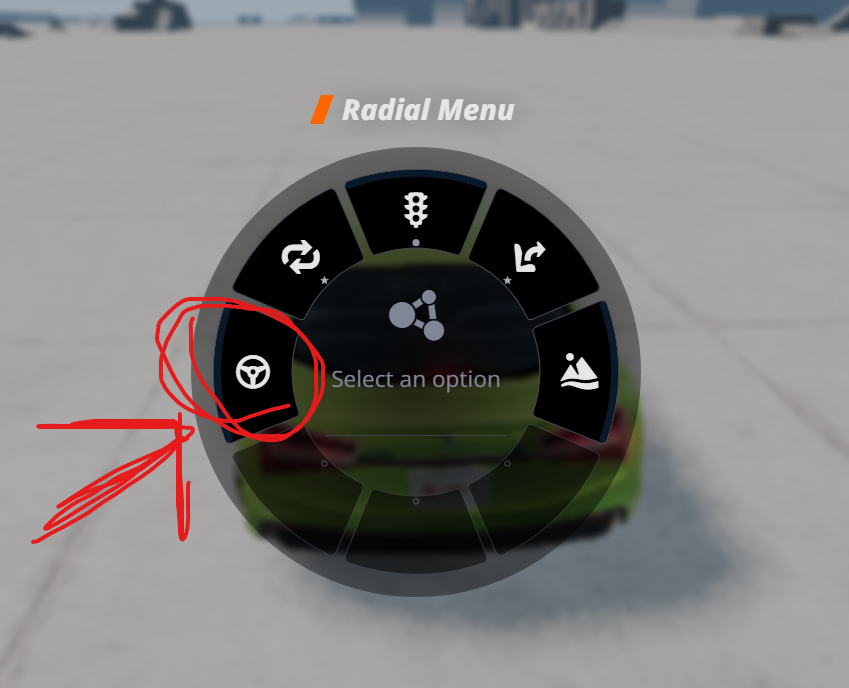
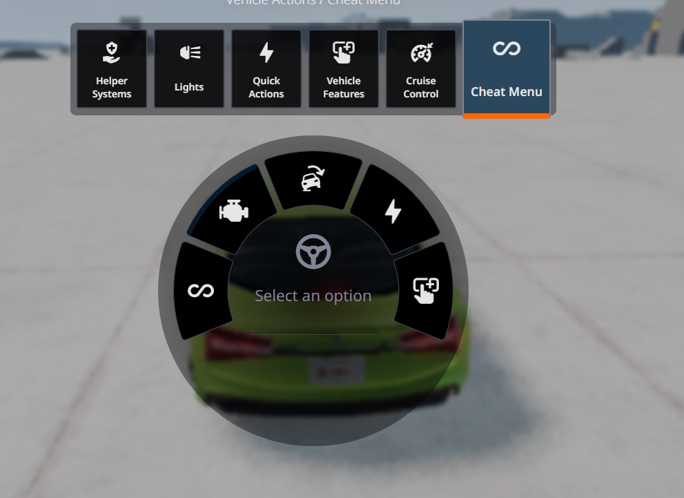
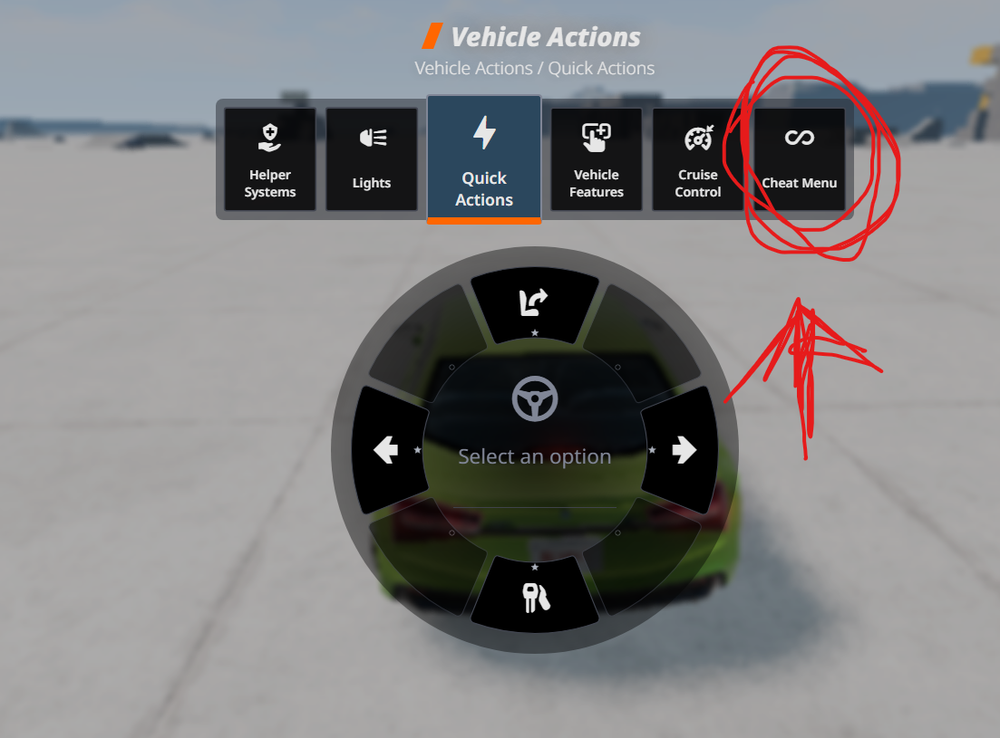

Indestructible
Блокирует новый урон после аварий и помогает тестировать без страха разломать машину.
BeamNG.drive mod
Включай неуязвимость, выкручивай мощность до x100, добавляй super grip и переключай low gravity прямо через стандартное quick access меню в игре.



Что внутри
Блокирует новый урон после аварий и помогает тестировать без страха разломать машину.
Пресеты от x1 до x100 усиливают мотор, ускорение и раскрывают экстремальную максимальную скорость.
Сильно повышает сцепление с дорогой и делает поведение машины стабильнее даже на большой скорости.
Снижает гравитацию для более длинных прыжков, плавных приземлений и безумных трюков.
Моментально возвращает текущую машину к обычным настройкам, если хочешь отключить все эффекты.
Как открыть в игре
В колесе действий найди иконку руля, как показано на первом скриншоте.
Во вкладке быстрых действий появится отдельный пункт Cheat Menu.
Внутри меню можно переключать режимы машины и выбирать пресеты мощности в пару кликов.
Установка
Путь установки
C:\Users\(ваш пользователь)\AppData\Local\BeamNG\BeamNG.drive\current\mods
Быстрый вариант: вставь в проводник %LocalAppData%\BeamNG.drive\current\mods.
Готово к установке
Рекомендуем ещё
Если хочешь удобную систему повторов и мгновенного отката интересных моментов, посмотри этот проект:
Перейти на сайт RIS